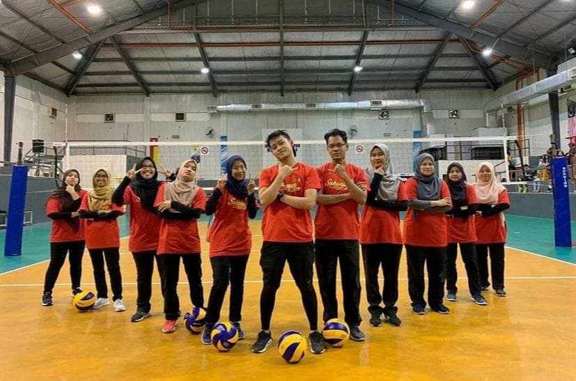
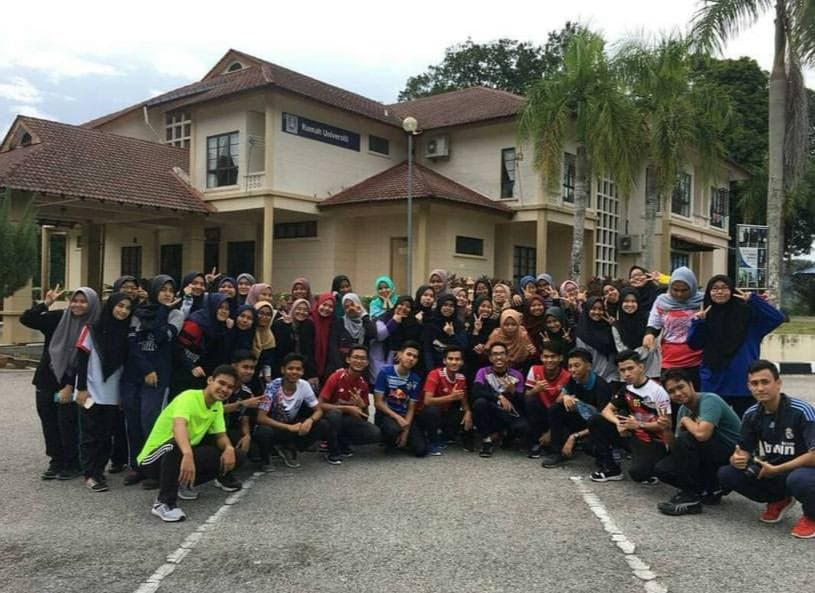
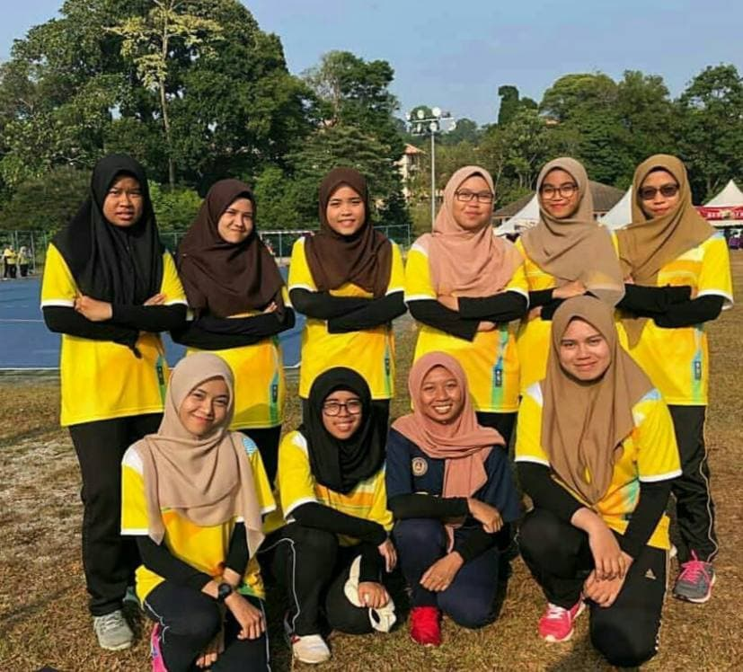

In 2019, I have participated a volunteering programme in Sukanun Sport Games 2019.


This is our faculty club members. Our club named MARA University of Technology Accountancy Society (MUTAC).
In 2018, we participated our club programme to build new bonding with the members (EXCO and Secretariat). The programme named Re-treat Mutac 2.0.
The animated gif shows our club members that consists of MT and EXCO.

In 2018, I have participated in Sukan Antara Fakulti (SAF) on behalf of Faculty Accountancy. We got 3rd place in Futsal Game.